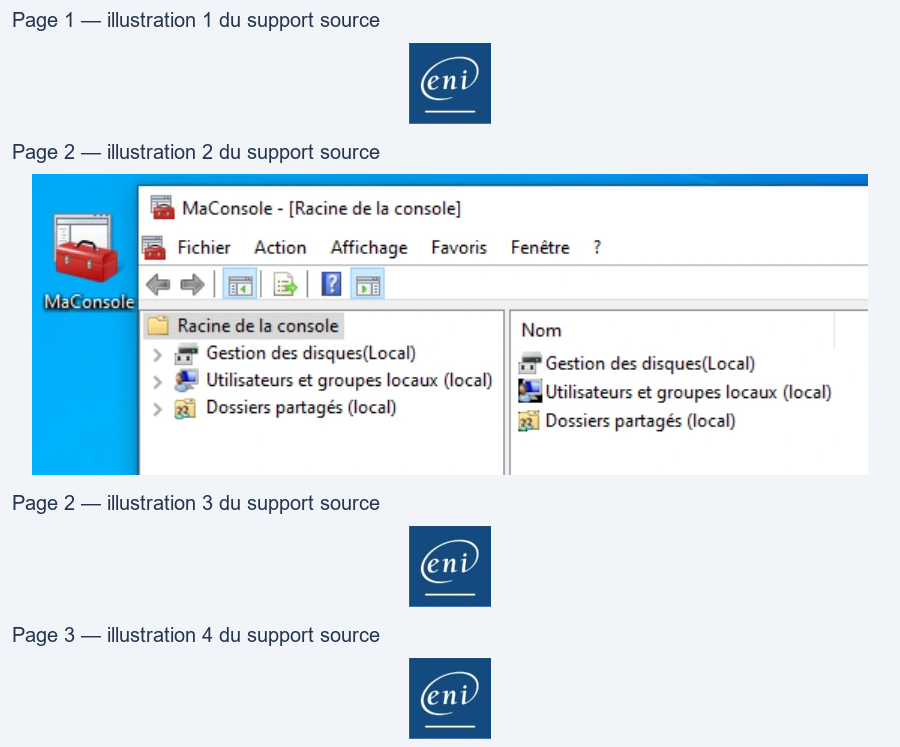

Transcription du document du Drive TSSR. La mise en forme est adaptée au Web ; les compléments IA du portail sont présentés séparément.
Systèmes Clients Microsoft
TP du Module 03 – Interagir avec Windows 10
Sur la VM Win10-XX
•
Ouvrez une session sur le système puis changez le mot de passe.
Faites CTRL+ALT+SUPPR dans votre VM puis changer de mot de passe
•
Supprimez les raccourcis Windows Store et Courrier de votre barre des tâches.
Ajoutez-y ensuite un raccourci Windows PowerShell
Clic droit sur les icônes du bureau > Détacher de la barre des tâches
Rechercher > PowerShell > clic droit > Epingler à la barre des tâches
•
Interrompre temporairement l'installation des mises à jour Windows Update pendant
35 jours au plus.
Rechercher > Windows Update
Options avancées de Windows Update
Options avancées
Interrompre les mises à jour > Suspendre les mises à jour au maximum
•
Quel nom porte votre "PC" ? (Indice : DESKTOP-…)
Rechercher > Nom > Afficher le nom de votre PC
•
Renommez votre "PC". Il portera le même nom que votre VM
Rechercher > Nom > Afficher le nom de votre PC
Renommer ce PC
Un redémarrage est nécessaire
Après le redémarrage, vérifiez la bonne prise en compte du nouveau nom.
•
Créez une console mmc personnalisée. Elle vous permettra de configurer les disques,
les utilisateurs et les groupes ainsi que les partages. Cette console devra être
disponible depuis votre bureau.
Démarrer > Exécuter > mmc
Fichier > Ajouter/supprimer des composants logiciels enfichables
Gestion des disques > Cet ordinateur > Ajouter
Utilisateurs et groupes locaux > l'ordinateur local > Ajouter
Page 1/3
© ENI – Tous droits réservés
Systèmes Clients Microsoft
Dossiers partagés > l'ordinateur local > Ajouter
OK
Fichier > Enregistrer sous > Bureau > MaConsole.msc
•
Personnalisez le papier peint du bureau
Clic droit n’importe où sur le bureau > Personnaliser
•
Désactiver la mise en veille du système
Rechercher > Veille > Modifier les conditions de mise en veille de l'ordinateur
Ecran > jamais
Veille > jamais
Sur la VM Discovery
•
Ouvrez une session avec l'utilisateur adm (Pa$$w0rd)
•
Quels sont les composants logiciels enfichables disponibles dans la console admConsole
disponible sur le bureau ?
Ouvrir la console admConsole et observer les logiciels enfichables présents :
-
Gestion de l’ordinateur
-
Gestionnaires de périphériques
-
Services
•
Renommez l'OS, il portera le nom DiscoveryXX (XX étant vos initiales)
Rechercher > nom > Afficher le nom de votre PC
Renommer ce PC
Un redémarrage est nécessaire
Après le redémarrage, vérifiez la bonne prise en compte du nouveau nom
Page 2/3
© ENI – Tous droits réservés
= MaConsole - [Racine de la console]
i Fichier
Action
Affichage
Favoris
Fenêtre
?
© || =|
| Racine
de la console
Nom
> Wat Gestion des disques(Local)
% Gestion des disques(Local)
> Ml Utilisateurs
et groupes locaux (local) PA Utilisateurs et groupes locaux (local)
>
fm) Dossiers partagés (local)
Hi Dossiers partagés (local)
eni
Systèmes Clients Microsoft
•
Interrompre temporairement l'installation des mises à jour Windows Update pendant 35
jours au plus.
Rechercher > Windows Update
Options avancées de Windows Update
Options avancées
Interrompre les mises à jour > Suspendre les mises à jour au maximum
Page 3/3
© ENI – Tous droits réservés
